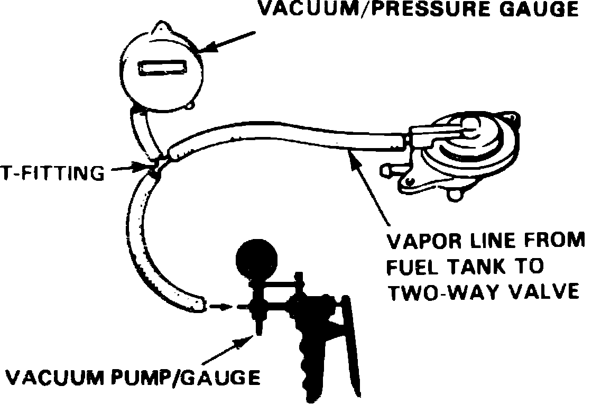
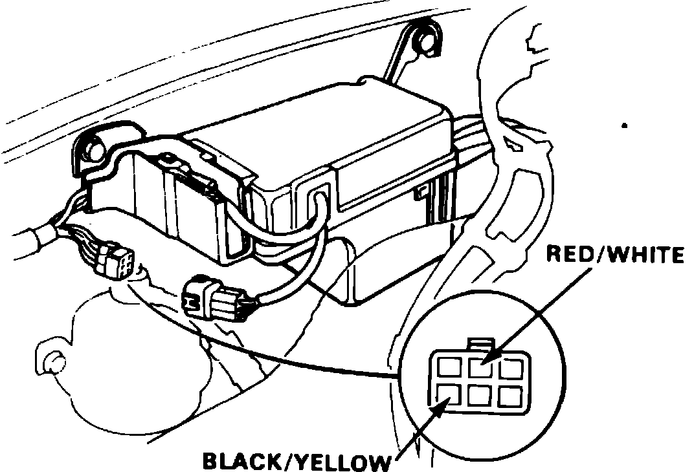

Evaporative Check Valve: Testing and Inspection
Fig. 4 Installing T-Fitting, Vacuum/Pressure Gauge & Vacuum Pump Into Vapor Hose:

Fig. 5 Connecting T-Fitting To Pressure Side Of Vacuum/Pressure Gauge:

1. Remove fuel filler cap.
2. Disconnect vapor hose from fuel tank to two-way valve, install suitable T-fitting into hose, then connect vacuum/pressure gauge and pump into hose as shown in Fig. 4.
3. Slowly apply vacuum while observing gauge. Vacuum should stabilize between .2-.6 inches Hg. If vacuum is above or below specified values, replace two-way valve and repeat test.
4. Connect T-fitting to pressure side of vacuum/pressure gauge, Fig. 5, then slowly pressurize vacuum hose and observe gauge. Pressure should stabilize between 1-2.2 inches Hg. If pressure stabilizes above or below specified values, replace two-way valve and repeat test.